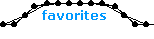
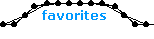

| 012 |
 |
name: Armadillicus
genre: snake
comments: I thought long and hard about the name because I wanted it to sound ancient, powerful, and Roman. When I tuned it I wanted people to see the sine wave coursing through its spine. When I look at how it's head flails around dramatically, I think about those giant worms in the Dune saga. |
| 023 |
 |
name: Radiance
genre: walker/motored
comments: This model took about 3 days of rebuilding, tinkering, and tuning. When I submitted it I told ed this and he wrote back: "Congratulations, it's a marvel." That made me very proud and for a while I always submitted comments with my models so ed would have something to read. Unfortunately I rarely do this now as I'm often pressed for time. |
| 056 |
 |
name: Gooey_Glider
genre: walker/flex
comments: Once I posted some fantastic old models by mono in the forum. Soon a bunch of us were talking about 'soft' walkers and LS was the first to post a terrific flex model called octoroc. This really sparked my imagination and eventually led to Gooey_Glider.
|
| 057 |
 |
name: Ursa_Minor
genre: walker/flex
comments: When I submitted this model I was worried that people would be skeptical about a bear having 2 arms and 4 legs, but luckily everyone seemed to enjoy it. It shows you how wrapped up the construction and logic of a model I can get. That's why the community is great, it grants you with a perspective other than your own. |
| 103 |
 |
name: Hyperion
genre: other/flex
comments: Named after the Titan father of the Olympian Helios, this was my most intensive construction yet at the time. Partly because I had a big screw up when I forgot to install the spine of a zipped tension spring and went into simulate mode. I hadn't saved it yet so it took me about an hour to untangle it. |
| 165 |
 |
name: Sine_Dragon
genre: snake/flex
comments: I consciously set out to do two things with this model. Firstly, I had wanted to revisit the dramatic style of Armadillicus ever since I made it. And secondly, I had some imagery of Chinese dragons in my head that I wanted to express. The result was just as elegant as I'd hoped and I was very happy with the amount of curvature it achieves. |
| 170 |
 |
name: Tour_de_France
genre: roller
comments: Most of the time I have no idea how a model will turn out. I usually just have a basic idea for a structure and whether or not it ends up in this grouping is a matter of chance. But with this model I new it either was going to be great or terrible since I was trying to mimic a real bicycle. I only wish it could have been faster. |
| 249 |
 |
name: Rhodon
genre: zero-g/physics
comments: This is a hexagon version of a structure Jeckyll was working on but the same principle applies to any geometric shape. It was built with a 6pt linear motor embedded along one axis. I learned from Lectvay how to pause the model and delete the motor. It usually takes several times to get a version without excessive vibration. |
| 263 |
 |
name: Sisyphus
genre: roller/inertial
comments: This is a relatively simple mechanism made with beautifully complex parts. The wheels are a design you see back in the zoo before flex structures were common. The motor is a version of the RAM I used in Helios, but with two more linear motors added in between, and out of phase with the original ones. |
| 264 |
 |
name: Newtonian_Time
genre: other/motored
comments: I had this idea long before I figured out that stacking counter rotors allowed me to multiply the timing of the wave pallet. The hour hand runs normally and the minute hand runs at a multiple of twelve. I usually don't scavenge parts like this stack but LS is one of those constructors that I trust to make his devices as accurate as possible. |
| 265 |
 |
name: Einsteinian_Time
genre: other
comments: I constructed a free version of this frame so I could determine exactly where I wanted it before building it. I was initially unsure about the diagonal webbing but I settled on it because it hid the muscles that drive the oscillation. In my opinion this is the best of my time series visually, although the reference is more obscure than in Newtonian_Time. |
| 266 |
 |
name: Phenomenological_Time
genre: other/physics
comments: This model is not as technical as its companions, but it has the most significance. Like Newtonian_Time the imagery should be readily familiar but the falling of the leaf is independent of wave pallet timing. Thus the experience of the passage of time is individual, but anchored to reality. This model also reminds me of the poem 'l(a' by e.e. cummings. |
| 287 |
 |
name: Magenta
genre: roller/motored
comments: This is probably my overall favorite model. I always like how Cyan looked but when I made this more complicated version I realized the legs didn't give the frame enough clearance. So I added the hollow rims and I think it turned out much better. I really enjoy the juxtaposition of the square shapes and radial symmetry of the wheels. |
| 292 |
 |
name: America
genre: zero-g/flex
comments: I wanted to make this model ever since I saw mono's surface. I began work long ago and nearly finished the webbing before realizing it was too big. I gradually rebuilt it all, doing a little bit each day to avoid boredom. I finally accelerated its production because I wanted to submit it on the eve of our war with Iraq to show support for my country. |
| 316 |
 |
name: Interconnectedness
genre: zero-g/motored
comments: Like Rhodon, this model is both a hexagon and a result of observing Jeckyll's work. He already found 3, 4, and 5 sided arrangements for 2pt compound motors so the only thing left to do was a 6 sided version. The relative amplitude had to be experimentally determined for each length motor. Hopefully you find the result as mesmerizing as I do. |


 
